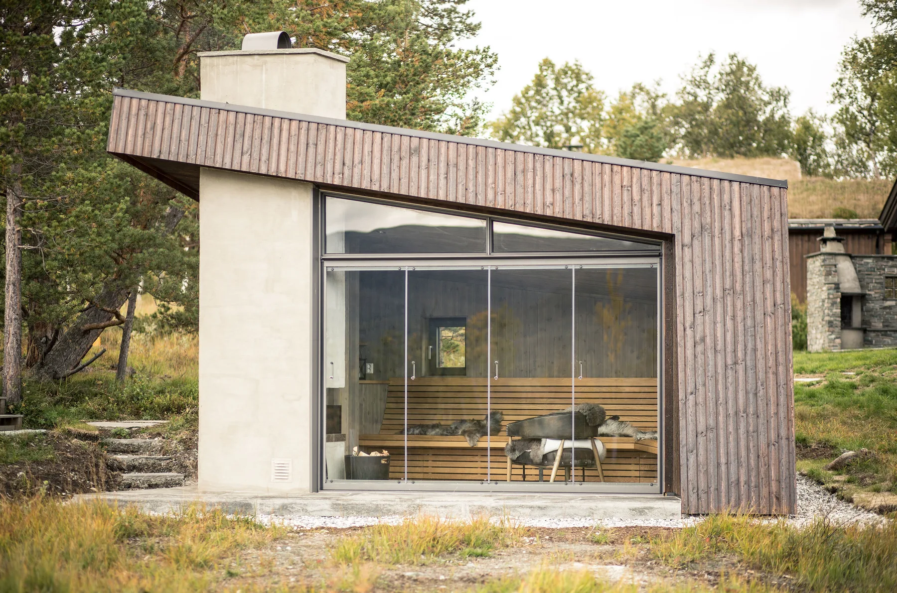
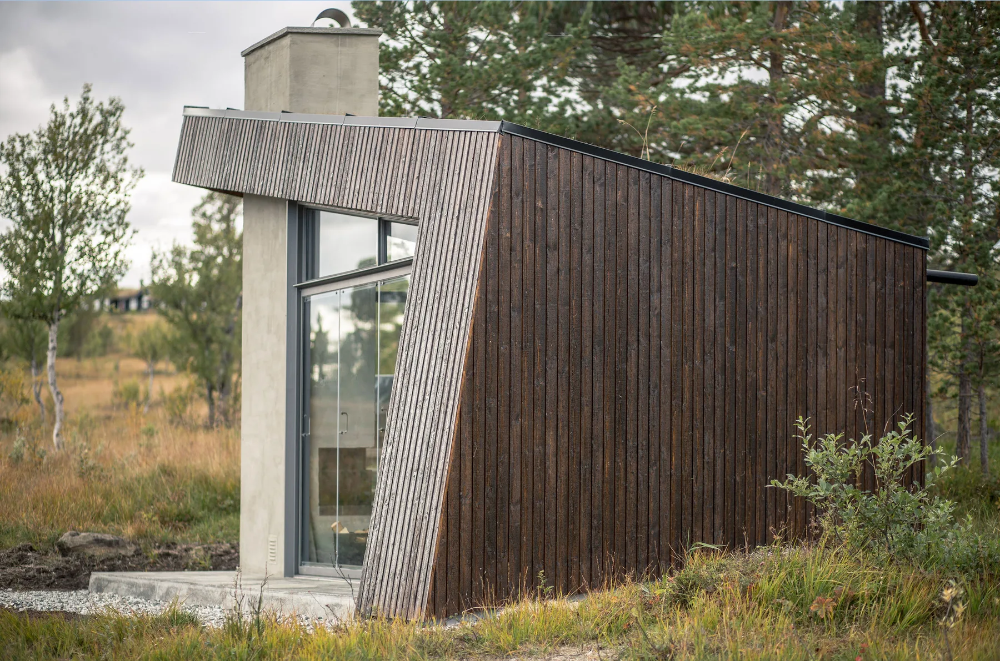
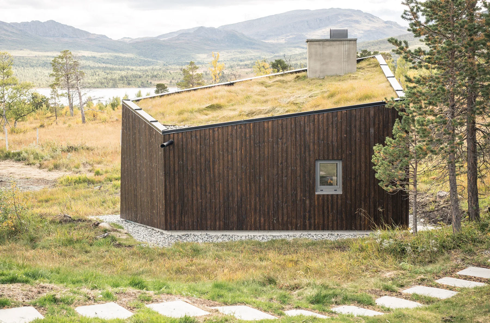
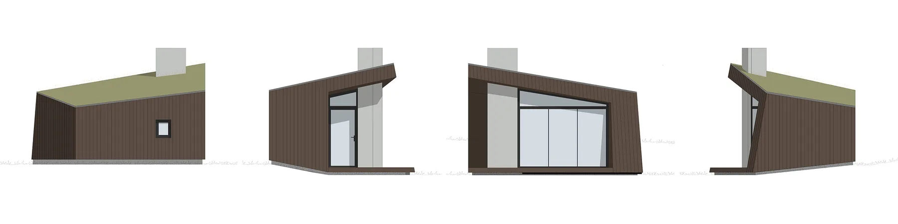
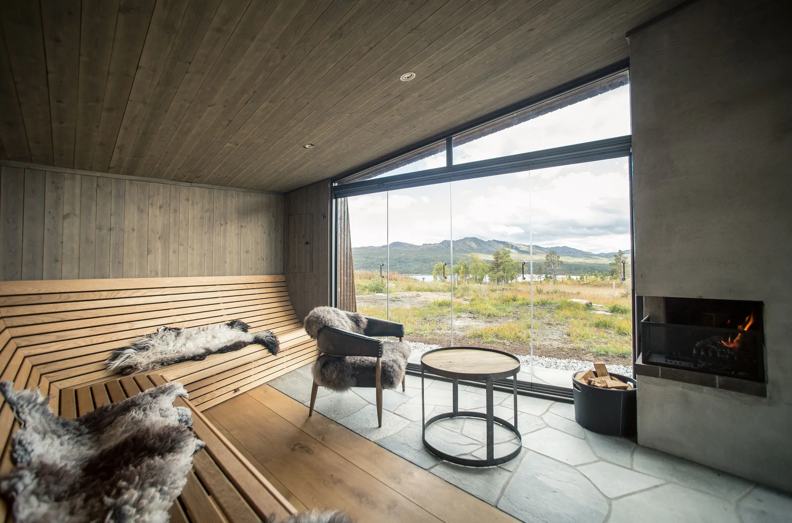

Viewpoint Granasjøen
32Gapahuk
Nybygg · Bolig · fritid · Helse · rekreasjon · livssynSe bildegalleri

- Byggherre
- S. Nordrum
- Byggeår
- Byggeår
- Medarbeidere
- Kjetil Nordø
Om prosjektet
En gapahuk ved Granasjøen gir ly og utsikt mot Trollheimen. Torvtak, mørkt treverk og glassfelt som kan skyves til side knytter bygningen tett til terrenget og naturen.
Bilder & tegninger5 bilder



Forstørr

Forstørr

Forstørr

ForstørrFoto: Bergersen Arkitekter AS
La oss begynne med en samtale